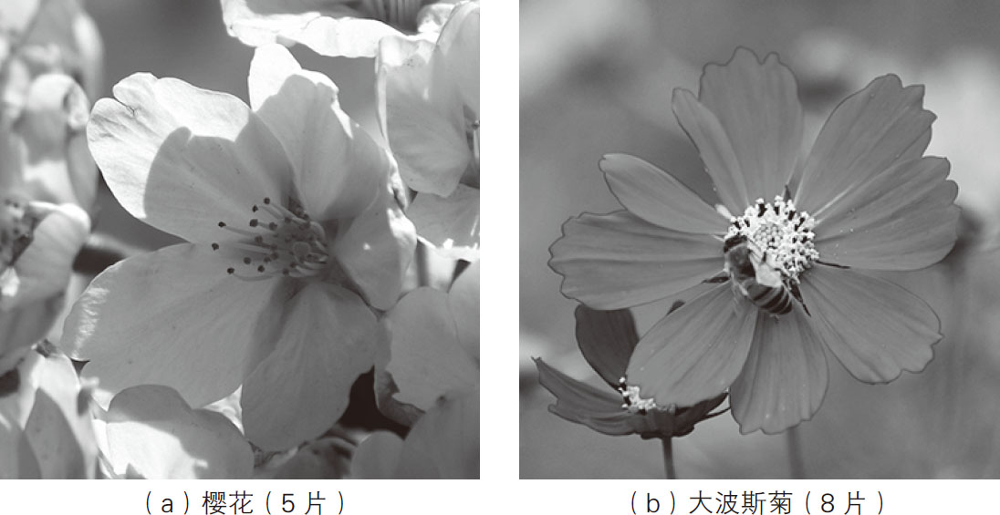
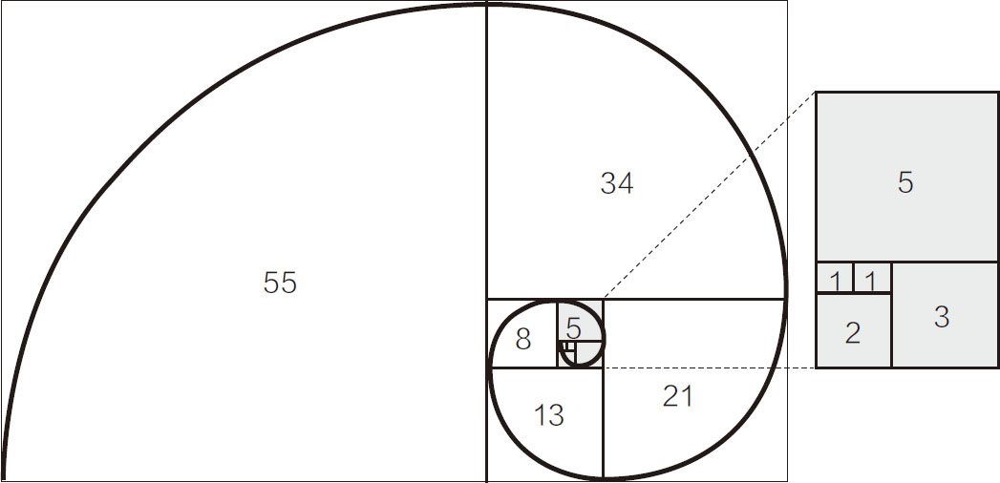
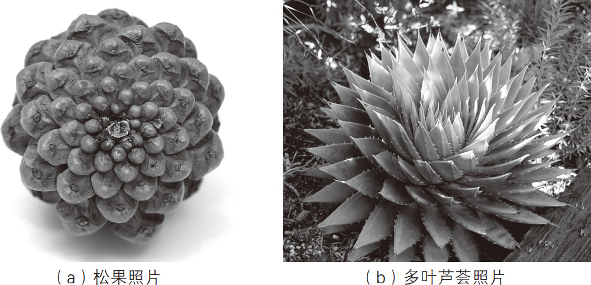

你相信花瓣与台阶之间有着某种关联吗？其实，这两种看上去完全不相干的事物，都遵循着一个同样的数学定律。
首先，我们来思考一个问题：在你的面前共有5个台阶，你要走上去，可以选择一步1个台阶，也可以选择一步2个台阶，那么一共有多少种方法可以走上这5个台阶呢？这个问题相当有名，时不时会出现在各类大型考试当中。
在回答这个问题的时候，不要立刻去考虑第5个台阶，应该从第1个台阶入手。走上第1个台阶的方法显然只有1种，而走上第2个台阶的方法有2种，分别为一步上1个台阶和一步上2个台阶。因此，如果要走上第3个台阶，就有3种走法，即走上第1个台阶的方法数（1种）＋走上第2个台阶的方法数（2种）＝3种。
将上述结论进行推广，就能得到以下推论：
走上第0个台阶的方法数＝1种（无须行动，按1种算）；
走上第1个台阶的方法数＝1种；
走上第2个台阶的方法数＝1＋1＝2种；
走上第3个台阶的方法数＝1＋2＝3种；
走上第4个台阶的方法数＝2＋3＝5种；
走上第5个台阶的方法数＝3＋5＝8种。
不难发现，走上某个台阶的方法数等于走上它前面两个台阶的方法数之和，这就使看似复杂的计算过程一下子变简单了。走上第6个台阶的方法共有5＋8＝13种。
如果单把方法数罗列出来就可以看出，从第三个数开始，每个数都等于其前面两个数的和 ，因此能得到以下数列：
1，1，2，3，5，8，13，21，34，55，89，…
这就是著名的“斐波纳奇数列 ”。斐波纳奇数列在意大利数学家斐波纳奇的《计算之书》一书出版后，变得广为人知。但发现这个数列的并非斐波纳奇本人。当时，斐波纳奇数列在阿拉伯国家已被发现，只不过还没有传入西方国家而已。
斐波纳奇的父亲威廉是个商人，他经常带着儿子往来于世界各地。有一段时间，因为威廉工作的关系，斐波纳奇居住在阿尔及利亚的贝贾亚省。在那里，斐波纳奇得到了学习最先进的阿拉伯数学的机会。他发现，阿拉伯数学比欧洲数学更为先进。于是，他遍访地中海沿岸的数学家，从他们那里学习了阿拉伯数学体系，并将学到的内容写在了《计算之书》中。在这本书中，自然也包含了斐波纳奇数列的知识。如此看来，究竟谁第一个发现了斐波纳奇数列始终是一个谜，而斐波纳奇数列的得名只是因为斐波纳奇将它推广了出去。
斐波纳奇数列在自然界中随处可见。例如，通常来说樱花的花瓣是5片，大波斯菊的花瓣是8片，如图2-1所示。各种花瓣的数量总是3片、5片、8片、13片……这些都是斐波纳奇数列中的数字 。

图2-1 樱花及大波斯菊的照片
另外，使用斐波纳奇数列画出来的图形也具有不可思议的特性。其中最具代表性的就是斐波纳奇螺旋线 ，也称“黄金螺旋”。首先我们以斐波纳奇数列中的数为边长，以螺旋状的方式逐一画正方形，即各正方形的边长依次为：1、1、2、3、5、8、13、21……接下来我们将所有正方形的对角用弧线连接起来，就画出了斐波纳奇螺旋线，如图2-2所示。

图2-2 斐波纳奇螺旋线
如此画出的斐波纳奇螺旋线与我们在自然界中看到的很多图形极其相似，如沙漠中的多肉植物长大时的样子、松果鳞片的排列方式（如图2-3所示）、向日葵种子的镶嵌方式、鹦鹉螺的贝壳纹理等。自然界中，遵循着斐波纳奇数列的现象非常多。

图2-3 松果及多叶芦荟照片
（图片来源：MyLoupe、DEA/RANDOM）
我们知道，斐波纳奇螺旋线是在以斐波纳奇数为边长的正方形拼接而成的矩形中画出来的，因此这个矩形也称“黄金矩形 ”。它的长和宽就是斐波纳奇数列中相邻的两个数，如89和55。如果将其中的正方形无限扩大，那么对应的黄金矩形也会无限扩大。假如我们画出一个超级大的黄金矩形并远眺它，一定会看到一个非常迷人的图形。因为这个矩形的长宽比约为1︰1.618，也就是最能给人美感的“黄金比例”。
黄金比例是可以使用斐波纳奇数列得到的，关于这个结论的证明有一定的难度，在此不做赘述。总之，我们能看到相邻两个斐波纳奇数的商会越来越接近黄金比，下面我们来看一下具体的数字：
2÷1＝2；3÷2＝1.5；5÷3≈1.667；8÷5＝1.6；
13÷8＝1.625；21÷13≈1.615；34÷21≈1.619；
55÷34≈1.618；……
可以看出，越往下两个数字的商就越接近1.618。因为黄金矩形的长和宽是相邻的两个斐波纳奇数，所以长与宽的数值越大，对应的矩形也越大，其长宽比越接近1︰1.618。
黄金比例具有非常强的艺术性、和谐性，蕴藏着丰富的美学价值，这一比值能够带给人们强烈的美感，被视为建筑和艺术领域最理想的比例。无论是古埃及金字塔和希腊帕特农神庙，还是现代社会中的Twitter和百事可乐的商标，都有黄金比例的影子。看着美到无可比拟的鹦鹉螺壳，我在想，也许正是因为自然界中的很多事物都遵循黄金比例和斐波纳奇数列，我们的世界才显得格外美丽。
下面我们来看一个稍难的问题，那就是植物的叶序中也存在着斐波纳奇数列 。植物的叶片是围绕着茎，沿着顺时针或逆时针方向排列的，所以，当俯瞰植物的时候，总会在某一圈中看到重叠的叶片。我们在对叶片的排列方式进行分类的时候，往往将叶片重叠发生在第几圈作为分类基准。
我们将叶片在茎上的排列方式称为“叶序” 。最常见的叶序是互生叶序，即在茎的每个节上只有一片叶子，并且众叶片交互而生。如果任选一片叶子作为起点，按照向上的方向，将各叶片的着生点用线连接，就会得到一条螺旋线。这条螺旋线拥有盘旋而上的趋势，终点为与起点叶片重叠的那个叶片的着生点，这条螺旋线的绕茎周数被称为叶序周。
不同种类的植物其叶序周可能不同，中间包含的叶片数也可能不同。例如，榆树的叶序周为1，每周有2片叶；桑树的叶序周为1，每周有3片叶；桃树的叶序周为2，每周有5片叶；梨树的叶序周为3，每周有8片叶；杏树的叶序周为5，每周有13片叶；松树的叶序周为8，每周有21片叶……如果以上述各种植物的叶序周为分子，以每周包含的叶片数为分母，可以得到这样的数列：1/2，1/3，2/5，3/8，5/13， 8/21，…，不难发现，数列中各数的分子和分母都是斐波纳奇数。准确地说，它们是基于斐波纳奇数列，按照“兴柏—布朗定律”排列的。但是，无论叶片在茎上的排列方式如何，相邻两节的叶片都是互不重叠的，各叶片在与阳光垂直的平面上呈镶嵌状排列，这种现象被称为“叶镶嵌 ”。叶镶嵌可以使所有叶片都最大限度地接受光照，进行光合作用 。
除了上述现象外，斐波纳奇数列在我们的日常生活中可谓无处不在，大家不妨仔细寻找一下身边隐藏的斐波纳奇数列。